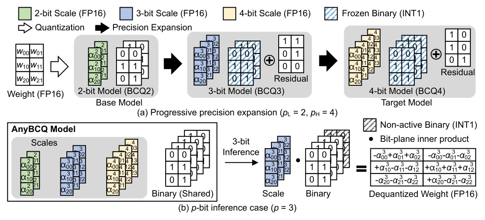
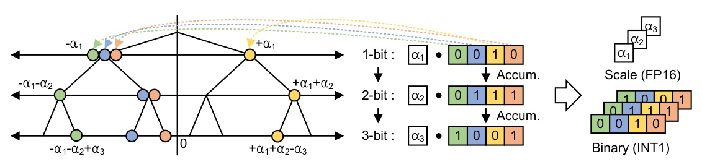
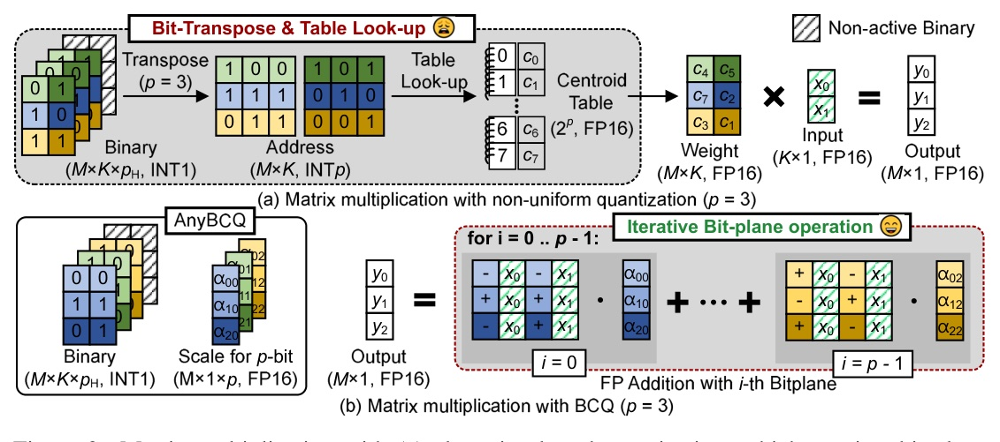
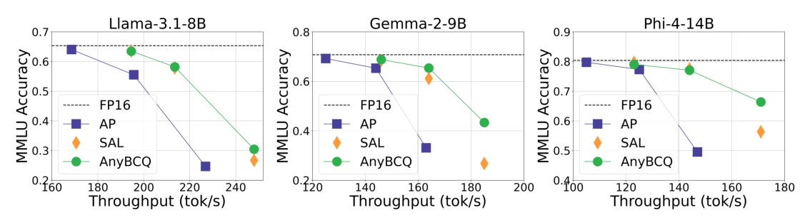

一份把 multi-precision LLM 從「可切 bit」推進到「硬體也真正吃得到 bit-plane」的量化工作。
AnyBCQ 的本質不是又一個低 bit quantizer；它把 2/3/4-bit flexibility 做成 shared binary bit-planes + per-precision scales，讓 kernel 可以直接在 bit-plane 上算。
Any-Precision LLM style
AnyBCQ style
| Representation | Scale GB | Binary GB | Total GB |
|---|---|---|---|
| BCQ2 | 0.24 | 1.95 | 2.19 |
| BCQ3 | 0.36 | 2.92 | 3.28 |
| BCQ4 | 0.49 | 3.89 | 4.38 |
| Separate 2/3/4-bit models | 1.09 | 8.76 | 9.85 |
| AnyBCQ proposed | 1.09 | 3.89 | 4.99 |


Optimization settings
What is optimized

AnyBCQ 的速度優勢來自 消滅 overhead，不是把 overhead 寫得比較快。
AP kernel 的主要時間花在 index reconstruction；BCQ bit-plane algebra 讓這些階段根本不出現。
| Method | Bit | MMLU | CSR Avg. |
|---|---|---|---|
| FP16 | 16 | 65.02 | 72.72 |
| AWQ | 2 | 24.12 | 35.60 |
| Any-Precision LLM | 2 | 24.66 | 39.65 |
| ShiftAddLLM | 2 | 24.83 | 45.78 |
| AnyBCQ fixed | 2 | 35.96 | 58.89 |
| AnyBCQ multi | 2 | 35.32 | 58.71 |
| Bit | Method | MMLU | CSR Avg. | Read |
|---|---|---|---|---|
| 3 | Any-Precision LLM | 55.53 | 66.45 | non-uniform baseline |
| 3 | AnyBCQ multi | 58.28 | 69.30 | better accuracy |
| 4 | FP16 | 65.02 | 72.72 | upper reference |
| 4 | Any-Precision LLM | 64.04 | 72.57 | slightly higher MMLU |
| 4 | AnyBCQ multi | 63.15 | 72.37 | competitive, faster path |
| Shape N x K | cuBLAS FP | AP 2-bit | AnyBCQ 2-bit | AnyBCQ speedup |
|---|---|---|---|---|
| 4096 x 4096 | 296us | 230us | 223us | 1.33x |
| 14336 x 4096 | 852us | 353us | 319us | 2.67x |
| 17920 x 5120 | 1230us | 432us | 409us | 3.01x |
| 28672 x 8192 | 3040us | 830us | 747us | 4.07x |
| Model / bit | AP Wiki ppl | AB Wiki ppl | AP tok/s | AB tok/s |
|---|---|---|---|---|
| Llama-3.1-8B / 2 | 1680.77 | 19.01 | 228 | 245 |
| Llama-3.1-8B / 3 | 8.60 | 8.08 | 196 | 212 |
| Gemma-2-9B / 2 | 19.62 | 12.72 | 163 | 185 |
| Phi-4-14B / 2 | 13.37 | 9.97 | 147 | 171 |

| Method | Avg precision | ROUGE-L | BERTScore |
|---|---|---|---|
| AP | 3.60 | 0.154 | 0.840 |
| AnyBCQ | 3.60 | 0.178 | 0.849 |
| AP | 3.15 | 0.148 | 0.836 |
| AnyBCQ | 3.15 | 0.155 | 0.843 |
| AP | 2.23 | 0.097 | 0.821 |
| AnyBCQ | 2.23 | 0.113 | 0.830 |
這篇最值得學的地方，是它沒有把「模型壓縮」和「kernel 實作」分開看。
AnyBCQ 用較受限的 BCQ representation，換到可直接執行的 bit-plane algebra。對部署而言，這個交易很乾淨：少一點高 bit peak accuracy，換多 precision、低 memory、低 overhead。
| Fixed vs multi | Wiki ppl | C4 ppl |
|---|---|---|
| 3-bit fixed | 7.68 | 12.23 |
| 3-bit multi | 8.08 | 12.41 |
| 4-bit fixed | 6.62 | 10.26 |
| 4-bit multi | 6.84 | 10.65 |
“By representing weights as binary bit-planes with corresponding scale factors, AnyBCQ enables bit-plane-level computation and maps naturally to accelerator-friendly, bit-parallel arithmetic.”
AnyBCQ 的關鍵是把權重表示成 binary bit-plane + scale，使 compute path 直接對齊硬體友善的 bit-level arithmetic。Abstract p.1
“AnyBCQ reduces the total memory footprint by 49% compared with the multi-model baseline on Llama-3.1-8B.”
同時支援 2/3/4-bit 不需要三份模型；共享 binary terms 讓 footprint 從 9.85GB 降到 4.99GB。Table 1 / §1 p.3
“bit transposition is the dominant overhead, accounting for roughly 35-58% of the latency...”
速度優勢的機制有硬證據：AP 的 bit-transpose 本身就是大頭 overhead；AnyBCQ 是把這步拿掉。Appendix A.2 / Table 7 p.14
“A limitation is that the inherent representational capacity of BCQ, together with the shared-binary constraint, can reduce peak accuracy at higher bit widths relative to non-uniform schemes.”
不是所有地方都贏；高 bit-width 下 BCQ 的表達能力與共享 binary constraint 會吃掉一點峰值 accuracy。§7 p.11
AnyBCQ 是一篇很「部署導向」的量化論文：它把多精度、低記憶體、kernel 可執行性放在同一個設計裡，而不是各自最佳化。